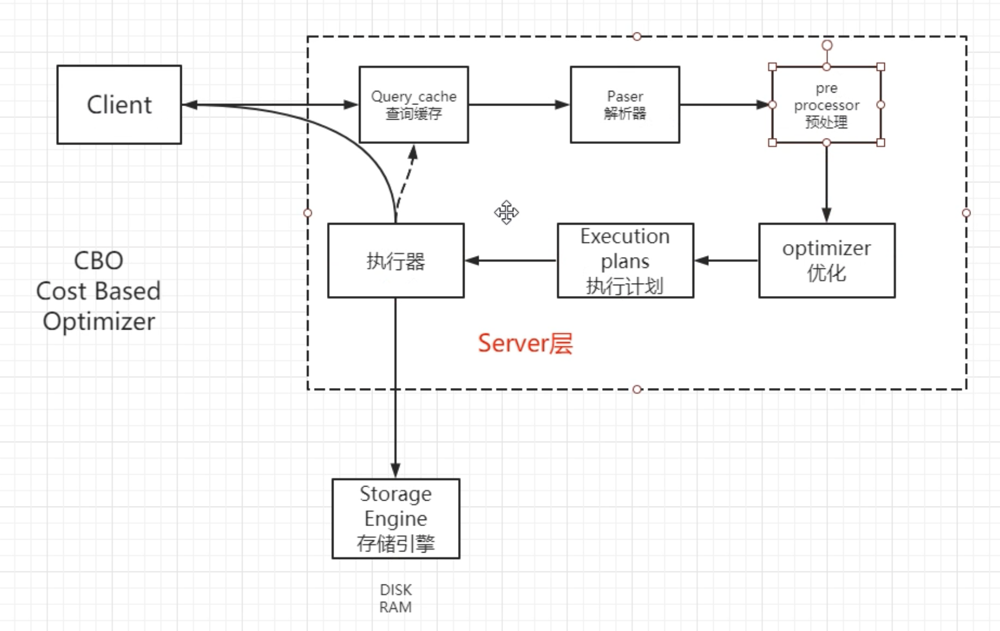
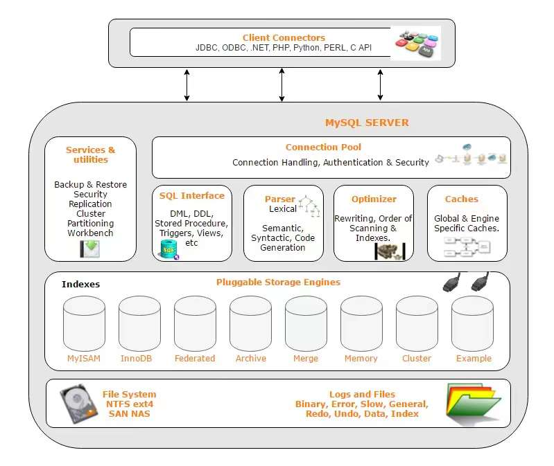
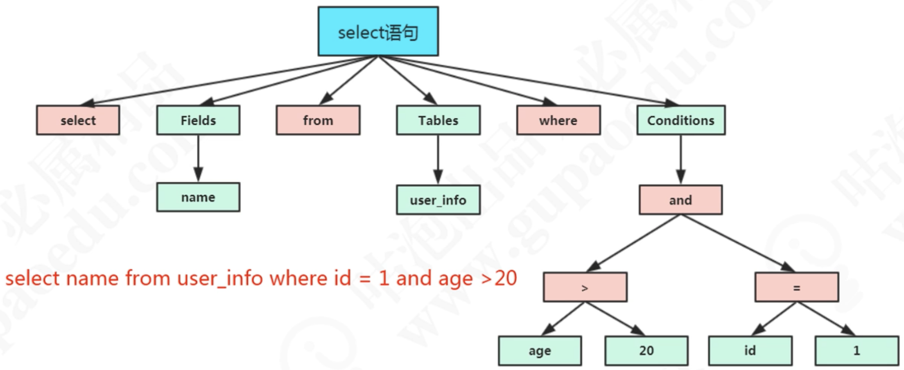
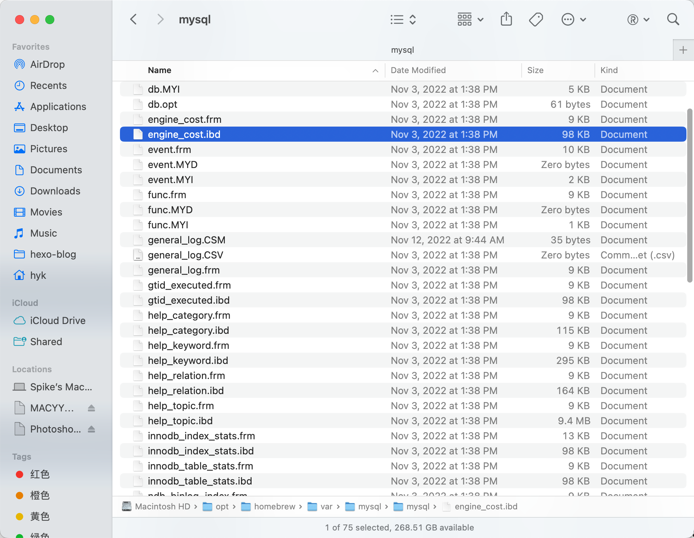
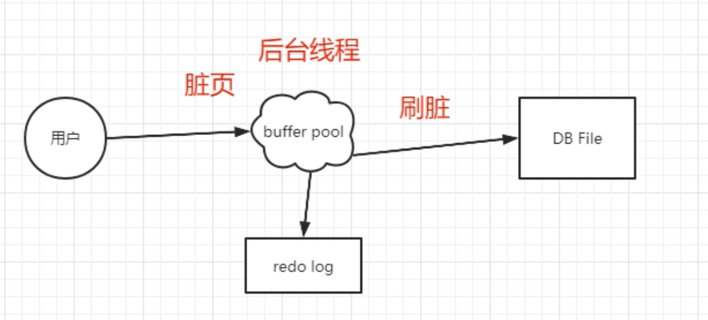

MySQL - Execution Flow & Architecture
This article mainly records that how a query sql works, MySQL Architecture and Layers.Here is the flow chart.


视频版本选择–5.7.x
1 | |
MySQL 通信协议
通讯类型——同步&异步
一般来说，客户端连接数据库都是同步连接的
同步的比较多，简单一些；异步编程难度较大。
连接方式——长连接&短连接
Client，Terminal，Connector & etc.
短连接：即用即连，用完就关
长连接：连接池，会消耗内存
一般来说都是长连接，而且会把这个连接放到客户端的连接池。
E.g.：淘宝早起用LAMP-PHP连MySQL——参考《淘宝技术这10年》
MySQL中查看线程数
1 | |
Result 结果
1 | |
查看超时&最大连接数
Timeout 超时时间
1 | |
默认都是28800秒，8 小时。
查看最大连接数 Max Connections
1 | |
默认最大连接数为151。实际可以到100k
修改连接数
- 动态临时修改，服务器重启后会恢复
1 | |
- 永久修改
修改**/etc/my.cnf 或 my.ini**
*两种参数级别
- GLOBAL 全局
- SESSION 当前会话窗口 (不带级别，默认SESSION)
1 | |
官网手册
https://dev.mysql.com/doc/refman/5.7/en/
通讯协议
- TCP/IP
如果指定-h 参数，就会用TCP/IP协议
编程语言的连接模块都是用 TCP 协议连接到 MysQL 服务器的
1 | |
- Unix Socket
类似于之前Linux安装多个mysql时用的，在Linux服务器上，如果没有指定-h参数，它就用socket方式登录。它不用通过网络协议，也可以连接到MySQL的服务器，它需要用到服务器上的一个物理文件(/var/lib/mysql/mysql.sock)
通信方式
- 单工：数据单向传输
在两台计算机通信的时候，数据的传输是单向的。
生活中的类比：遥控器。
- 半双工：数据双向传输，但不能同时传输
MySQL 使用了半双工的通信方式。
生活中的类比：对讲机。
- 全双工：数据双向传输，可以同时传输
生活中的类比：打电话。
SQL语句默认不超过 4MB，4194304
1 | |
对于服务端来说，也是一次性发送所有的数据，不能因为你已经取到了想 要的数据就中断操作，这个时候会对网络和内存产生大量消耗。
所以，在程序里面要避免不带limit 的这种操作，比如一次把所有满足条件的数据全 部查出来，一定要先count一下。如果数据量的话，可以分批查询。
查询缓存 Query Cache
查询缓存，默认关闭。
Query cache, default status is closed.
作用帮助不大，缓存这一块，还是交给ORM框架，或者独立的缓存服务，比如Redis等来处理更合适。在My SQL 8. 0 中，查询缓存功能已经被移除了。
The function is not very helpful, usually we will use ORM framework or some other independent cache server like redis to deal with. From 8.0 or futher version, the cache query function is removed.
1 | |
Parser & Pre-processor 语法解析和预处理
- 词法解析
将单词打碎成一个个单词，逐个解析，进行词法分析。
1 | |
它会打碎成8个符号，每个符号是什么类型，从哪里开始到哪里结束。
- 语法解析
语法分析会对SQL做一些语法检查，比如单引号有没有闭合，然后根据MySQL定义的语法规则，根据SQL语句生成一个数据结构——解析树 (select_lex)。
编写一个自己的连接池的中间件，也要实现这些功能。

- 预处理器
语义解析：检查生成的解析树，解决解析器无法解析的语义，如是否存在该表，该数据库等
权限：检查是否有权限执行该语句
预处理之后得到一个新的解析树。
Query Optimizer& Execution plans 查询优化与查询执行计划
优化器 Optimizer
一条SQL语句是可以有很多种执行方式的，最终返回相同的结果，他们是等价的。
查询优化器的目的就是根据解析树生成不同的执行计划(Execution Plan) ，然后选择一种最优的执行计划，MySQL里面使用的是基于开销（cost）的优化器，那种执行计划开销最小，就用哪种。
Cost Based Optimizer CBO优化器
查看查询开销
1 | |
优化器可以做什么
- 以哪张表为基准表
- 有多个素引可以使用的时候，选择哪个索引
- 对于查询条件的优化，比如移除1=1之类的恒等式，移除不必要的括号，表达式的计算，子查询和连接查询的优化。
执行计划 execution plans
优化器最终会把解析树变成一个执行计划(execution plans)，执行计划也是一个数据结构。
MysQL提供了一个执行计划的工具。我们在SQL语向前面加 上EXPLAIN，就可以 看到执行计划的信息。
1 | |
存储引擎Storage Engine
在MySQL里面，支持多种存储引擎，他们是可以替换的，所以叫做插件式的存储引擎。
MySQL can support various kinds of storage engines, they can be replaced by each other, hence the engines are also called as pluggable storage enginees.
查看数据库的存储引擎
1 | |
查看存储引擎
See storage engine
1 | |
MySQL 5.7 Supported Storage Engines
- InnoDB: The default storage engine in MySQL 5.7. InnoDB is a transaction-safe (ACID compliant) storage engine for MySQL that has commit, rollback, and crash-recovery capabilities to protect user data. InnoDB row-level locking (without escalation to coarser granularity locks) and Oracle-style consistent nonlocking reads increase multi-user concurrency and performance. InnoDB stores user data in clustered indexes to reduce I/O for common queries based on primary keys. To maintain data integrity, InnoDB also supports FOREIGN KEY referential-integrity constraints. For more information about InnoDB, see Chapter 14,The InnoDB Storage Engine.
- MyISAM: These tables have a small footprint. Table-level locking limits the performance in read/write workloads, so it is often used in read-only or read-mostly workloads in Web and data warehousing configurations.
- Memory（内存存储，快，易丢失）: Stores all data in RAM, for fast access in environments that require quick lookups of non-critical data. This engine was formerly known as the HEAP engine. Its use cases are decreasing; InnoDB with its buffer pool memory area provides a general-purpose and durable way to keep most or all data in memory, and NDBCLUSTER provides fast key-value lookups for huge distributed data sets.
- CSV（容易解析，快）: Its tables are really text files with comma-separated values. CSV tables let you import or dump data in CSV format, to exchange data with scripts and applications that read and write that same format. Because CSV tables are not indexed, you typically keep the data in InnoDB tables during normal operation, and only use CSV tables during the import or export stage.
- Archive(归档不动的数据，易压缩): These compact, unindexed tables are intended for storing and retrieving large amounts of seldom-referenced historical, archived, or security audit information.
- Blackhole: The Blackhole storage engine accepts but does not store data, similar to the Unix /dev/null device. Queries always return an empty set. These tables can be used in replication configurations where DML statements are sent to replica servers, but the source server does not keep its own copy of the data.
- NDB (also known as NDBCLUSTER): This clustered database engine is particularly suited for applications that require the highest possible degree of uptime and availability.
- Merge: Enables a MySQL DBA or developer to logically group a series of identical MyISAM tables and reference them as one object. Good for VLDB environments such as data warehousing.
- Federated: Offers the ability to link separate MySQL servers to create one logical database from many physical servers. Very good for distributed or data mart environments.
- Example: This engine serves as an example in the MySQL source code that illustrates how to begin writing new storage engines. It is primarily of interest to developers. The storage engine is a “stub” that does nothing. You can create tables with this engine, but no data can be stored in them or retrieved from them.
You are not restricted to using the same storage engine for an entire server or schema. You can specify the storage engine for any table. For example, an application might use mostly InnoDB tables, with one CSV table for exporting data to a spreadsheet and a few MEMORY tables for temporary workspaces.
不同的所属引擎，有不同的特性，根据实际业务需求进行切换。不同的表可以切换不同的存储引擎。修改存储引擎会锁表，不要在生产环境中进行操作。
查看数据存储位置
1 | |
可以看到存储引擎不同，底层文件不一样

任何一个存储引擎都有一个frm文件，这个是表结构定义文件。不同的存储引擎存放数据的方式不一样，产生的文件也不一样，InnoDB是1个，MEMORY没有，MyISAM是两个。
存储引擎就是我们的数据真正存放的地方，在MySQL里面支持不同的存储引擎。再往下就是文件管理系统，内存或者磁盘。
执行引擎 Execution Engine
所有的存储引擎，都要根据规范，开放接口给执行器进行操作执行。
执行器利用存储引擎提供的相应的API来完成操作。
No matter whichever engine you choose to use, execution engine can run.
顺序I/O VS 随机I/O
顺序IO：不需要重新寻址，比较快速地拿到数据，效率高；由于地址是连贯的，找到地址后，一次可以读写许多数据，效率比较高。
随机IO：会将数据随机分散在磁盘不同也得不同扇区，读取数据速度较慢。需要先找到地址，再读写数据，每次拿到的地址都是随机的。
刷盘是随机I/O，而记录日志是顺序I/O（连续写的），顺序I/O效率更高。因此先把修改写入日志文件，在保证了内存数据的安全性的情况下，可以延迟刷盘时机，进而提升系统吞吐。
缓冲池 Buffer Pool
因为数据库需要频繁对磁盘进行 IO 操作，为了改善因为直接读写磁盘导致的 IO 性能问题，所以引入了缓冲池。
InnoDB设定了一个存储引擎从磁盘读取数据到内存的最小的单位，叫做页。操作系统也有页的概念。操作系统的页大小一般是4K(局部性原理)，而在InnoDB里面，这个最小的单位默认是 16KB 大小，它是一个逻辑单位。如果要修改这个值的大小，必须修改源码重新编译安装。
InnoDB使用了一种缓冲池的技术，也就是把磁盘读到的页放到一块内存区域里面。 下一次读取相同的页，先判断是不是在这个内存区域里面，如果是，就直接读取，然后操作，不用再次从磁盘加载。
1 | |
Buffer Pool默认大小是128M (134217728字节)，可以调整。

修改数据的时候，先修改内存缓冲池里面的页。内存的数据页和磁盘数据不一致的时候，我们把它叫做脏页。那脏页什么时候同步到磁盘呢? InnoDB里面有专门的后台线程把Buffer Pool的数据写入到磁盘，每隔一段时间就一次性地把多个修改写入磁盘，这个动作就叫做刷脏。
PS：刷脏页的过程是异步的，这样更新操作就不需要等待磁盘的 IO 操作了。因此这些特点极大地提升了 InnoDB 的性能。
(redo) Log Buffer
因为刷脏不是实时的，如果Buffer Pool 里面的脏页还没有刷入磁盘时，数据库宕机或者重启，这些数据就会丢失。
所以，内存的数据必须要有一个持久化的措施。
InnoDB 把所有对页面的修改操作专门写入一个日志文件。
如果有未同步到磁盘的数据，数据库在启动的时候，会从这个日志文件进行恢复操作 (实现crash-safe) 。 我们说的事务的ACID里面D（持久性），就是用它来实现的。
WAL（Write-Ahead Logging，日志先行） 。即：事务提交前先写日志，再修改页（修改页的时机就是刷脏页的时机）。这里所谓的日志，就是 磁盘的redo log（重做日志），默认2个文件，每个文件48M
1 | |
除了redolog之外，还有一个跟修改有关的日志，叫做undolog.redo.log 和 undo.log 与事务密切相关，统称为事务日志。
在写 redo log 时会先写 redo log buffer，并在以下时机将 redo log 刷新到磁盘：
- 每秒刷新一次
- 事务提交时
- redo log buffer 剩余空间小于 1/2 时
Feature Of redo log 特点
- redo log 是InnoDB存储引擎实现的，并不是所有存储引擎都有，支持崩溃恢复是InnoDB的一个特性；
- redo log 是物理日志，记录的事“在某个数据页上做了什么修改”；
- redo log 的大小是固定的，前面的内容会被覆盖，一旦写满，就会触发buffer pool到磁盘的同步，一边腾出空间记录后面的修改。默认是48M
除了redo log，还有一个跟修改有关的日志，叫做undo log（逻辑日志）。redo log和undo log 与事务密切相关，统称为事务日志。
undo log (撤销日志或回滚日志)记录了事务发生之前的数据状态(不包括select)。如果修改数据时出现异常，可以用undo log 来实现回滚操作（保持原子性，ACID的A）。
1 | |
后台线程
后台线程的主要作用是负责刷新内存是中的数据和把修改的数据页刷新到磁盘，后台线程分为：master thread , IO thread（主服务器数据发给从服务器）, purge thread（刷脏的）, page cleaner thread（清除缓存）。
binlog
MySQL的Server层也有一个日志文件，叫做binlog，可以被所有的存储引擎使用，默认是关闭的。
binlog 是 MySQL 服务器层面实现的一种二进制日志，用于记录所有对数据库的更改操作（这种日志被称为逻辑日志）。
一般我们会将 binlog 用于以下几个方面：
- 主从复制：MySQL 从服务器可以通过订阅 binlog 实现对主服务器的增量复制。
- 审计：通过对 binlog 中的数据进行审计，判断是否存在安全问题，比如 SQL 注入。
- 数据库增量备份与恢复：在使用备份还原数据后，可以使用 binlog 中记录的内容对备份时间点（简称备份点）后的数据进行恢复。因为 binlog 会还会记录下更改操作的时间，所以 binlog 可以恢复到某一具体时间点的数据。这就为我们删库后提供了除跑路以外的第二个选项：使用 binlog 恢复数据。
使用 binlog 进行恢复的流程是：
- 先通过最新的备份恢复数据库的全量数据，并记录下备份文件备份的时间点；
- 在 binlog 中找到这个时间点，提取这个时间点以后的数据用于实现对备份点后数据的恢复（这个特性被称为 Point in Time，简称 PIT）。
有 binlog 为什么还要 redo log ？
- binlog 不知道数据库究竟是在哪一时刻丢失了哪部分数据，只能从备份点开始对 binlog 记录重放来恢复数据，比较耗时。
- binlog 恢复是需要我们手动执行的，而 redo log 可以在服务器重启后自动恢复数据。
- WAL + 先写缓冲 + 异步刷脏页有效提升了磁盘的 IO 效率。
有 redo log 为什么还要 binlog？
- binlog 是服务器层面的功能，redo log 是 innoDB 的功能。redo log 帮助 InnoDB 实现了性能提升、自动恢复。但其他存储引擎是无法使用 redo log 的能力的。
- 我们也可以关闭 binlog，但大多数情况下我们都会开启，因为开启的好处更多。比如，主从模式需要订阅 binlog 进行主从复制，以及可以通过 binlog 进行数据库的增量备份和恢复。
redo log 有很多好处，所以我们不能放弃；binlog 也有很多好处，我们也不能放弃。
也就是说，这两个功能我们都需要开启。
既然都要开启，那么 我们必须保证 redo log 和 binlog 数据的一致性。 如果 binlog 有 redo log 没有，那么 redo log 宕机自动恢复时的数据就会缺少；反之，redo log 有，binlog 没有，如果开启了主从模式，主服务器因为 redo log 恢复了数据，但从服务器靠消费 binlog 保证和主服务器数据一致，这就导致从服务器比主服务器数据少。
参考：
https://www.51cto.com/article/717149.html
https://www.rathishkumar.in/2016/04/understanding-mysql-architecture.html